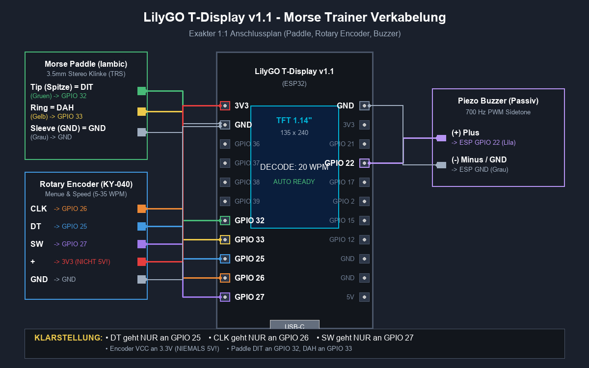

ESP32 Morse Trainer (DF3MT)
Flashe die neueste Firmware für das LilyGO TTGO T-Display v1.1 direkt aus dem Browser auf deinen ESP32 — ohne Installation von Software, Compilern oder Treibern.
🚀 Firmware direkt im Browser installieren
Verbinde dein LilyGO T-Display per USB-Kabel mit dem PC und klicke auf "INSTALL". Ein Chrome-, Edge- oder Opera-Browser wird benötigt (Web Serial API).
1
ESP32 verbinden
LilyGO Board mit USB-C-Datenkabel anstecken. Bei CH9102-Treiberproblemen ggf. WCH-Treiber installieren.
2
Port wählen
Unten auf "INSTALL" klicken und im Browser-Pop-up den COM-Port (z. B. USB-Serial) auswählen.
3
Loslegen!
Nach wenigen Sekunden startet das Gerät neu in das DF3MT Splash-Screen Menü. Fertig!
__BUILD_INFO__ · Alle Builds & Releases
💡
Tipp zum LilyGO T-Display v1.1 (WCH CH9102 USB Bridge):
Falls der COM-Port nicht erkannt wird, benötigst du den offiziellen WCH CH343/CH9102 Treiber für Windows. Achte zudem auf ein vollwertiges USB-Datenkabel (kein reines Ladekabel).
Falls der COM-Port nicht erkannt wird, benötigst du den offiziellen WCH CH343/CH9102 Treiber für Windows. Achte zudem auf ein vollwertiges USB-Datenkabel (kein reines Ladekabel).
📦 Manuelle Binaries & Offline-Flash
Für erfahrene Anwender, die mit esptool.py oder dem Espressif Flash Download Tool arbeiten:
merged-firmware.bin
Komplett-Image für Offset
0x0000 (enthält Bootloader, Partitionen und App).firmware.bin
Anwendungs-Firmware für Offset
0x10000 (OTA / Einzelflash).bootloader.bin
ESP32 2nd Stage Bootloader für Offset
0x1000.partitions.bin
Partitions-Tabelle für Offset
0x8000.boot_app0.bin
OTA-Startauswahl für Offset
0xe000.🔌 Hardware-Schaltplan & Verkabelung
Exakte Anschlussbelegung für Morse-Paddle (GPIO 32 / 33), Drehencoder (GPIO 25, 26, 27) und Piezo-Summer (GPIO 22 / 21 BTL):
